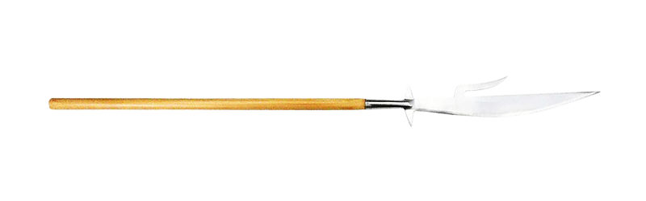
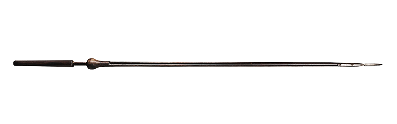
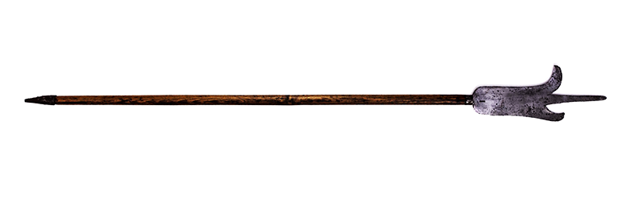
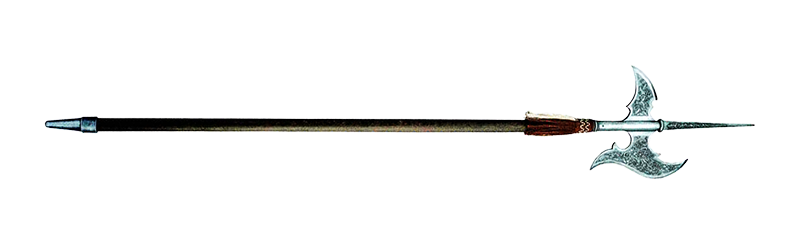
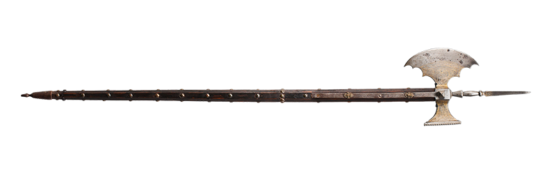
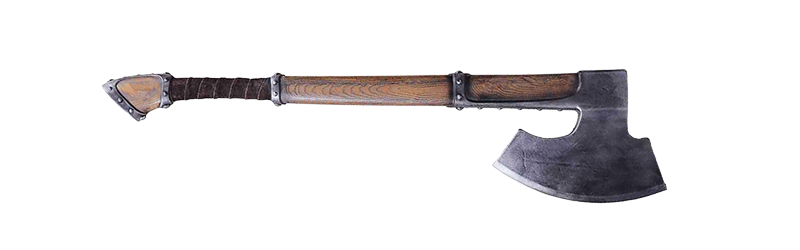

Fauchard
The fauchard introduced in the 12th century developed from the scythe for war. It was a large razor blade fixed to the end of a staff.

The fauchard introduced in the 12th century developed from the scythe for war. It was a large razor blade fixed to the end of a staff.

Presumably adopted from the Romans, the lance first appeared among the Franks in the 6th century. This lance was made of strong, hard wood, was about 13 feet (4.0 m) long, and had a blade-shaped metal head with two cutting edges and a sharp point. A wing-like attachment behind the spearhead prevented it from penetrating too deeply into the body or armor, making it easier to pull the weapon out. A flared support at the end prevented the spear from being pushed backward under the fighter’s arm. Until the 13th century the lance remained this form. In the early 13th century the flaired restraint was replaced by a metal ring called grate or graper. At the end of the century the lance for tournaments had a blunt tip that later developed into special crown-shaped head the Coronel to prevent injuries. The head of the lance for actual battle varied from leaf shape forms, polygonal tip, pointed tip and, pyramid-shaped tip. At the end of the century a funnel shaped metal plate the vamplate for hand protection as slipped over the shaft.

The bill, derived from the agricultural tool the billhook, was a staff weapon. Although its head varied in size, it was usually fitted with a sturdy hook whose inside and outside curves formed cutting edges. The bill is documented from the 13th to 17th centuries and was used by combatants on foot. The earliest forms featured a slightly convex cutting edge topped by a spike, and a compact blade. Over time, the head became longer, the centre of the edge sharper, and the fluke more pronounced. Sometimes, the faces had faceting or fullers. Two sharp lugs served as a guard at the base of the head. The socket, which was often inlaid with brass fittings, was mainly truncated pyramidal in shape with a rectangular base and rounded corners. The langets, essential for a combat weapon, formed extensions of the socket.

The halberd first appeared during the late 13 century in Switzerland. The early halberds had a wide cleaving blade fixed on a roughly 6.5 feet (2.0 m) pole and a long spike at the top. The halberd remained unchanged until the end of the 15th century when the spike became thinner and a fluke to break open helmets or armor was added.

The poleaxe had been introduced in the 14th century developing from the ordinary axe. Measuring around 5 feet (1.5 m) in length, it had a head consisting of a small convex axe blade, a hammer-like spike at the rear, and a short spike at the top. The upper part of the shaft was reinforced with metal strips, while the lower part featured a rondel.

The battle axe was widespread in pre-classical times, but was regarded as a barbarian weapon in the Greek and Roman worlds. Beginning in the 7th and 8th centuries, two forms began to emerge. In Central Europe, it retained a shape similar to that of the Francisca, with a long, narrow blade that was slightly curved on the outside and deeply hollowed on the inside. In Northern Europe, an axe with a broad, sickle-shaped blade and a flat back developed. Around the year 1000, a second type of Northern European axe appeared: the broadaxe. The cutting edge of the broad axe was often made of specially hardened iron that was welded to the head, and the blade and neck were occasionally decorated with silver or gold inlays. Over time, modifications and special forms emerged featuring spikes, hammers, or points on the side opposite the axe blade. With the advent of polearms in the 14th century, the battle axe’s popularity diminished.